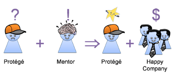

|
|
|
|
Bio
|
|
|
|
|
I
am a researcher in the
Human Interactions in
Programming Group at
Microsoft Research. My
research applies HCI
techniques to improve the
software development
process. I study collaborative software
development, Agile
methodologies, user-centered
interfaces for search and
developer awareness, and
K-16 and beyond programming education.
I mainly work with
Rob DeLine,
Gina Venolia,
Kael Rowan, and
Nachi Nagappan. I have
hosted several interns at
Microsoft Research:
Libby Hemphill,
Chris Poile,
Lucas Layman, and
Reid Holmes.
I
received a Ph.D. in
Computer Science from
the
University of California,
Berkeley in December
2005. I studied with
Susan L. Graham. My
dissertation was about
voice-based programming, how to build a development
environment that supports it,
and how well programmers can
use it. It is intended for
programmers with repetitive
strain and other injuries
that make it difficult for
them from using the keyboard
and mouse in their daily
work. For the quick
punch-line, read my
dissertation abstract below.
I also
work on
StarLogo, a programmable
modeling environment
designed to help students
learn about science.
StarLogo runs on PCs, Macs
and Unix machines. A new
version of StarLogo, called
StarLogo TNG,
incorporates graphical
block-based programming and
a 3D turtle world to teach
programming by enabling kids
to create their own games
and simulations.
Education in computer
science has always been
important to me. Along with
Steven Wolfman,
Daniel D. Garcia and
Rebecca Bates, I have
led workshops on
Kinesthetic Learning
Activities, physically
engaging classroom exercises
that teach computer science
concepts.
|
|
|
|
|
|
Research
|
|
|
|
|
|
|
|
Title:
|
|
Human Interactions in Programming
|
Projects:
|
|
Knowledge
Management,
Knowledge
Flow,
Cognitive
Aspects
of
Programming, Naming
in
Computer
Programs |
Links:
|
|
[PPIG
2006
Paper] [HIP Research Group] |
|
|
|  |
|
|
|
 |
|
|
|
 |
|
|
|
 |
|
Title:
|
|
Code Investigation Tools
|
Projects:
|
|
Codebook:
Social
Networking
Over
Code,
Deep Intellisense: Visual Studio Plugin,
Codifier: Developer-Centric Code Search |
Links:
|
|
[ICSE
2009] [MSR 2008 Paper] [HCIR 2007 Paper] |
|
|
 |
|
|
|
|
|
|
|
Title:
|
|
Semantic Disambiguation
|
Projects:
|
|
Inheritance Graph-based Persistent, Incremental Semantic Analysis, Harmonia |
Links:
|
|
[Garrison Dissertation] [Language Plugin Generation] [Harmonia] |
|
|
 |
|
Title:
|
|
Harmonia Program Analysis Toolkit
|
Projects:
|
|
Incremental Lexer, Parser, Semantic Analyses for Java, C, Scheme, Cool |
Links:
|
|
[Harmonia] [Download It] |
|
|
 |
|
|
|
|
|
|
|
|
|
|
|
|
Publications
|
|
|
|
|
Human Factors of Software Development Research
- Andrew Begel and Robert DeLine.
Codebook: Social Networking over Code. To appear in the 31st International Conference on
Software Engineering, New Ideas and Emerging Research Track, Vancouver, BC, Canada. May 2009. [pdf]
-
- Andrew Begel, Nachiappan Nagappan,
Christopher Poile, and
Lucas Layman.
Coordination in Large-Scale Software Teams. To appear in the 2nd Workshop on
Cooperative and Human Aspects of Software Engineering, Vancouver, BC, Canada. May 2009. [pdf]
-
- Andrew Begel,
Nachiappan Nagappan. Pair Programming: What's in it for me?. In the 2nd International Symposium on
Empirical Software Engineering and Measurement (ESEM), Kaiserslautern, Germany. October 2008. [pdf]
-
- Andrew Begel,
Nachiappan Nagappan. Global Software Development: Who Does It?. In the International Conference on
Global Software Engineering (ICGSE), Bangalore, India. August 2008. [pdf]
-
- Andrew Begel. Effecting Change: Coordination in Large-Scale Software Development. In the Workshop on
Cooperative and Human Aspects of Software Engineering (CHASE), Leipzig, Germany. May 2008. [pdf]
-
-
Lucas Layman,
Nachiappan Nagappan,
Sam Guckenheimer,
Jeff Beehler, Andrew Begel. Mining Software Effort Data: Preliminary Analysis of Visual Studio Team System Data. In the 5th Working Conference
on Mining Software Repositories (MSR), Leipzig, Germany. May 2008. [pdf]
-
-
Reid Holmes, Andrew Begel. Deep Intellisense: A Tool for Rehydrating Evaporated Information. In the 5th Working Conference
on Mining Software Repositories (MSR), Leipzig, Germany. May 2008. [pdf]
-
- Andrew Begel. Codifier: A Programmer-Centric Search User Interface. In the Workshop
on Human-Computer Interaction and Information Retrieval (HCIR), Cambridge, MA. October 2007. [pdf]
-
- Andrew Begel and Nachiappan Nagappan
Usage and Perceptions of Agile Software Development in an Industrial Context: An Exploratory Study.
In the First International Symposium on Empirical Software Engineering and Metrics (ESEM), Madrid, Spain,
September 2007. [pdf]
-
- Andrew Begel.
Help, I Need
Somebody! In the CSCW
Workshop: Supporting
the Social Side of
Large-Scale Software
Development, Banff,
Alberta, Canada,
November 2006. [pdf]
-
-
Ben Liblit,
Andrew Begel and
Eve Sweetser.
Cognitive Perspectives on the Role of Naming in Computer Programs. In the 18th Annual Psychology of Programming
Interest Group Workshop,
Brighton, UK, September 2006. [pdf]
-
- Andrew Begel and Susan L. Graham.
Assessment of a Speech-Based Programming Environment. In the IEEE Symposium on Visual Languages and Human-Centric Computing,
Brighton, UK, September 2006. [pdf]
SPEED Movie: [mov
(700 MB)]
-
- Andrew Begel and Susan L. Graham. Spoken Programs. In the IEEE Symposium on Visual Languages and Human-Centric Computing, Dallas, Texas, September 2005. [pdf]
[ppt]
-
- Andrew Begel. Programming by Voice: A Domain-specific Application of Speech Recognition. In AVIOS Speech Technology Symposium - SpeechTek West. February 2005. [pdf] [ppt]
-
- Michael Toomim, Andrew Begel and Susan L. Graham. Managing Duplicated Code with Linked Editing. In the IEEE Symposium on Visual Languages and Human-Centric Computing, Rome, Italy, September 2004. [VL/HCC 2004] [pdf] Slides: [ppt]
Programming and Systems Research
-
Andrew Begel and Susan L. Graham.
XGLR - An Algorithm for Ambiguity in Programming Languages.
In the Science of Computer Programs, (61)
3, pp. 211-227, May 2006.
[pdf]
-
- Andrew Begel, Marat Boshernitsan, and Susan L. Graham. Transformational Generation of Language Plug-ins in the Harmonia Framework. Technical Report CSD-05-1370, University of California, Berkeley, January 2005 [pdf]
-
- Andrew Begel and Susan L. Graham. Language Analysis and Tools for Ambiguous Input Streams. In the Fourth Workshop on Language Descriptions, Tools and Applications, ENTCS (110) pp. 75-96, Barcelona, Spain, April 2004. (LDTA 2004)
[pdf] Slides: [ppt] [pdf]
-
- Andrew Begel, Philip Buonadonna, David Culler, and David Gay. An Analysis of VI Architecture Primitives in Support of Parallel and Distributed Communication. Concurrency and Computation: Practice and Experience (14) 1. January 2002. [pdf].
-
- Andrew Begel, Steven McCanne, and Susan L. Graham. BPF+: Exploiting Global Data-flow Optimization in a Generalized Packet Filter Architecture. In the Proceedings of SIGCOMM '99. [ps]. Slides: [ppt] [html] [ps]
-
- Mike Spreitzer and Andrew Begel. More Flexible Data Types. In the Proceedings of The Eighth IEEE International Workshops on Enabling Technologies: Infrastructure for Collaborative Enterprises [WET-ICE'99]. [ps] [pdf].
Education Research
-
- Andrew Begel and Beth Simon.
Novice Software Developers, All Over Again.
In the International Computing Education Research Workshop, September 2008. [pdf]
-
- Andrew Begel and Beth Simon.
Struggles of New College Graduates in their First Software Development Job.
In the Technical Symposium on Computer Science Education, March 2008. [pdf]
[pptx]
-
- Andrew Begel,
Rebecca Bates, and
Steven A. Wolfman. Kinesthetic Learning in the Classroom.
Held at the Technical Symposium on Computer Science Education, March 2006. Workshop. [SIGCSE 2006] Website [url]
-
- Andrew Begel and Eric Klopfer. StarLogo TNG: An Introduction to Game Development In the Journal of E-Learning. In Press. [pdf]
-
- Andrew Begel and Eric Klopfer
. StarLogo: A Programmable Complex Systems Modeling Environment for Students and Teachers.. In A. Adamatzky and
M. Komosinki, Eds.Artificial Life Models in Software. Springer.
July 2005. [Book chapter]
-
- Andrew Begel, Daniel D. Garcia, and
Steven A. Wolfman. Kinesthetic Learning in the Classroom. Held atthe Technical Symposium on Computer Science Education, 2005. Workshop. [SIGCSE 2005] Website [url]
-
- Eric Klopfer, Mitchel Resnick, John Maloney, Brian Silverman, Andrea diSessa, Andrew Begel and Chris Hancock. Programming Revisited - The Educational Value of Computer Programming. In International Conference on Learning Sciences. Los Angeles, California, June 2004. Panel. [ICLS 2004] [pdf] Slides: [1. ppt] [2. ppt]
-
- Andrew Begel, Daniel D. Garcia, and
Steven A. Wolfman. Kinesthetic Learning in the Classroom. In the Proceedings of the Technical Symposium on Computer Science Education, 2004. Special Session. [SIGCSE 2004] [pdf] Slides: [ppt] Poster: [pdf] Website [url]
-
- Eric Klopfer and Andrew Begel. StarLogo in the Classroom and Under the Hood. Kybernetes (32) 1/2. January 2003. [pdf]
Theses
- Andrew Begel. Spoken Language Support for Software Development. Ph.D. Thesis. University of California, Berkeley. December 19, 2005. [pdf]
-
- Andrew Begel. Bongo, a Kids' Programming Environment for Creating Video Games on the Web. Master's Thesis. Massachusetts Institute of Technology. May 23, 1997. [pdf] [html]
-
- Andrew Begel. LogoBlocks: A Graphical Programming Language for Interacting with the World. Advanced Undergraduate Project. Massachuesetts Institute of Technology. May 24, 1996. [pdf] [html]
|
|
|
|
|
|
Talks
|
|
|
|
|
Paper Talks
-
CHASE 2008.
Effecting Change: Coordination in Large-Scale Software Development.
May 13, 2008 (pptx)
-
-
SIGCSE 2008.
Struggles of New College Graduates in their First Software Development Job.
Paper Presentation.
March 14, 2008 (pptx)
-
ESEM 2007.
Usage and Perceptions of Agile Software Development in an Industrial Context: An Exploratory Study.
Paper Presentation.
September 17, 2007 (ppt)
-
PPIG 2006.
Cognitive Perspectives on the Role of Naming in Computer Programs.
Paper Presentation.
September 7, 2006 (ppt)
-
-
VL/HCC 2006. Assessment of a Speech-Based Programming Environment.
Paper Presentation.
September 6, 2006. (ppt)
SPEED Movie (mov)
700 MB
-
- VL/HCC 2005. Spoken Programs. Paper Presentation. September 22, 2005. (ppt)
-
- AVIOS at SpeechTek West. Programming by Voice: A Domain-specific Application of Speech Recognition. Paper Presentation. February 22, 2005. (ppt)
-
- LDTA 2004. Language Analysis and Tools for Ambiguous Input Streams. Paper Presentation. April 3, 2004. (ppt) (pdf)
-
- SIGCOMM
1999. BPF+: Exploiting Global Data-flow Optimization in a Generalized Packet Filter Architecture. September 2, 1999. (ppt) (html) (ps).
Panels
- ICLS 2004Programming Revisited - The Educational Value of Computer Programming. Panel. June 25, 2004. (ppt)
Workshops
- CS&IT
2007 Program Your Own Games with XNA. Presented with
Krishna Kumar. June 28, 2007. (ppt)
-
- CS&IT
2006 Kinesthetic Learning in the Classroom. July 8, 2006. (ppt)
-
- SIGCSE 2006 Kinesthetic Learning in the Classroom. March 3, 2006. (ppt)
-
- CS&IT 2005 Kinesthetic Learning in the Classroom. June 26, 2005. (ppt)
-
- CS&IT 2005 Kinesthetic Learning in the Classroom. February 26, 2005. (ppt)
-
- SIGCSE 2005 Kinesthetic Learning in the Classroom. February 25, 2005. (ppt)
-
- SIGCSE 2004 Kinesthetic Learning in the Classroom. March 5, 2004. (ppt)
Invited Talks
- Agitar Software. "HIP" Tools for Software Development. April 27, 2007. (ppt).
-
- Agent Simulation: Applications, Models and Tools. StarLogo: Building a Modeling Construction Kit for Kids. October 16, 1999. (ppt).
-
- Santa Fe Institute Workshop on GIS Systems and Modeling. StarLogo: Massive Parallelism for the Masses. March 20-21, 1998. (ppt).
Doctoral Consortia
- VL/HCC 2004Spoken Language Support for Software Development. Talk given at the Graduate Student Consortium. September 28, 2004. (ppt)
-
- SIGCSE 2002Spoken Language Support for Software Development. Talk given at the Doctoral Consortium. February 27, 2002. (ppt)
Education Talks
- Spring 2005 Orientation and Teaching Conference for Graduate Student Instructors. Ran a workshop for new EECS GSIs. January 14, 2005. (html).
-
- CS 301 Talk: What Makes a Great TA?. September 13, 2004.
-
- Fall 2004 Orientation and Teaching Conference for Graduate Student Instructors. Ran a workshop for new EECS GSIs. August 27, 2004. (html).
-
- CS 301 Lecture: How to be a Great TA. February 8, 2002. (html)
-
- Spring 2002 Orientation and Teaching Conference for Graduate Student Instructors. Ran a workshop for new Quantitative Science GSIs. January 17, 2002. (html).
-
- Fall 2001 Orientation and Teaching Conference for Graduate Student Instructors. Ran a workshop for new EECS GSIs. August 24, 2001. (html).
-
- CS 301 Lecture: How to Be a Good TA. November 3, 2000. (html).
-
- Fall 2000 Orientation and Teaching Conference for Graduate Student Instructors. Ran a workshop for new EECS GSIs. August 25, 2000. (html).
-
- CS 301 Lecture: How to Be a Good TA. October 22, 1999. (html).
|
|
|
|
|
|
Teaching
|
|
|
|
|
I taught an after-school program to four 8th grade boys to teach them about complex systems and how to program in StarLogo. At first it was slow-going for some of the kids, but by the end, all really understood programming, and half of them understood complex systems!
In Spring 2001, I co-designed and co-taught CS301: Teaching Techniques for Computer Science, with Dan Garcia. CS301 is a class to teach first-time TAs in the Computer Science Division how to be the greatest TAs they can be. It was truly awesome.
In Spring 2000, I helped out my friend Laura Allen by being a workshop leader for the TechGyrl's '99 program. I put together a collection of ideas (that I snagged and rearranged from Gary Stager's Logo page) for MicroworldsLogo and LegoDacta.
In Spring 2000, I
TAd (GSId) CS164,
a class called
Introduction to
Compilers. It's for
junior/senior-level
Berkeley undergrads.
In Fall 1997, I TAd CS61a, the intro CS
course at Berkeley. It's taught by Brian Harvey. CS61a is a Berkeley port of 6.001, which I took at MIT in 1993. It uses the Scheme programming
language to introduce students to the zen of programming. After this course, learning any
other programming language is cake.
|
|
|
|
|
|
Personal
|
|
|
|
|
I grew up in
southeastern New York,
in Rockland County. I've
lived in NY, Boston, San
Francisco and now
Seattle. The rectangle
of my life is now complete.
For more information
(and pictures), see
my
personal home page.
|
|
|
|
|
|
|
|
|
|
|
Last updated:
March 24, 2009
|